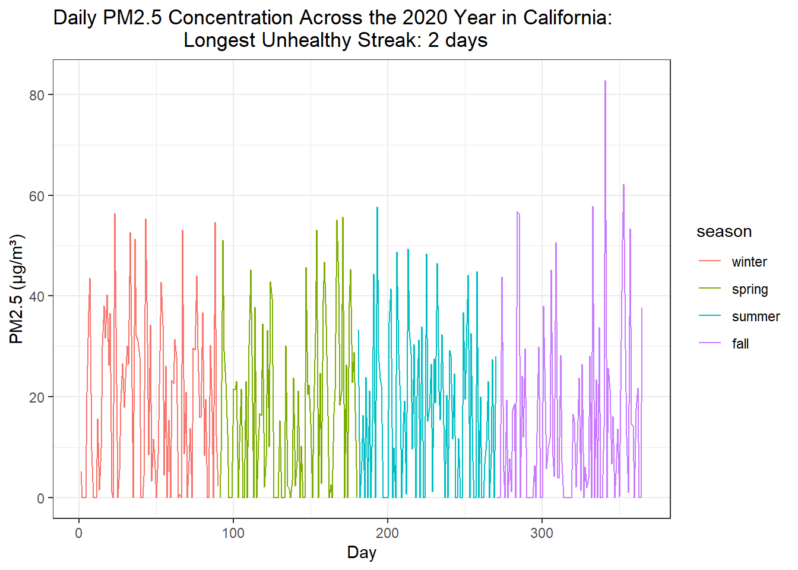
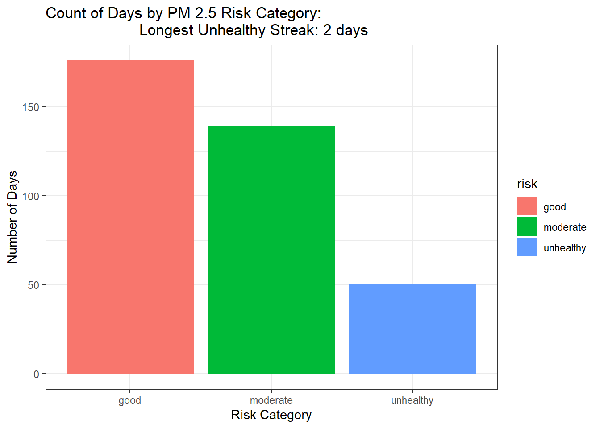

In this assignment you will simulate a year of air quality monitoring data, classify pollution risk levels, and summarize patterns across seasons. Complete all work in this Quarto document with visible code and output.
Part 1: Build a Dataset
Create a data frame with 365 rows representing daily air quality readings at a monitoring station. Your data frame must include the following columns:
day: a sequence of integers from 1 to 365
pm25: daily PM2.5 concentration (µg/m³), sampled from a distribution of your choice using one of the data generation functions covered in class (runif, rnorm, rpois). Choose parameters that produce realistic values — look up typical urban PM2.5 ranges to guide your choices.
Season: a factor column with levels “winter”, “spring”, “summer”, “fall”, assigned based on day number (days 1–90, 91–180, 181–270, 271–365)
Risk: an empty column initialized to NA — you will fill this in Part 2
library(tidyverse)
Warning: package 'dplyr' was built under R version 4.5.3
── Attaching core tidyverse packages ──────────────────────── tidyverse 2.0.0 ──
✔ dplyr 1.2.1 ✔ readr 2.1.5
✔ forcats 1.0.0 ✔ stringr 1.5.2
✔ ggplot2 4.0.0 ✔ tibble 3.3.0
✔ lubridate 1.9.4 ✔ tidyr 1.3.1
✔ purrr 1.1.0
── Conflicts ────────────────────────────────────────── tidyverse_conflicts() ──
✖ dplyr::filter() masks stats::filter()
✖ dplyr::lag() masks stats::lag()
ℹ Use the conflicted package (<http://conflicted.r-lib.org/>) to force all conflicts to become errors
air_quality_df <-tibble(Day =1:365,PM2.5 =pmax(0, rnorm(n =365, mean =12.75, sd =22.38)),Season =factor(case_when( Day %in%1:90~"winter", Day %in%91:180~"spring", Day %in%181:270~"summer", Day %in%271:365~"fall"),levels =c("winter", "spring", "summer", "fall")),Risk =NA)summary(air_quality_df$PM2.5)
Min. 1st Qu. Median Mean 3rd Qu. Max.
0.00 0.00 14.03 16.52 28.19 82.79
For the particulate matter 2.5 (pm25) daily concentrations, we chose to proceed with the average of the Daily Mean PM2.5 Concentration’s from California cities in the year 2020, which can be accessed here: https://www.epa.gov/outdoor-air-quality-data/download-daily-data. From this data (located in column E in the .csv file), we got a daily mean of 12.75 with a standard deviation of 22.38.
Part 2: Classify Risk with a For Loop
Using a for loop, fill in the risk column for each day based on the following PM2.5 thresholds (adapted from EPA AQI guidelines):
“good” — PM2.5 below 12 µg/m³
“moderate” — PM2.5 between 12 and 35.4 µg/m³
“unhealthy” — PM2.5 above 35.4 µg/m³
Within the same loop, also track the longest consecutive streak of “unhealthy” days. This will require checking the previous row’s risk classification at each step. Store the final streak length in a variable called max_unhealthy_streak
# start the streak counters both at 0 before the loop beginscurrent_streak <-0max_unhealthy_streak <-0# run the loop for each day for (i in1:nrow(air_quality_df)) {# grab the PM2.5 value for the current day (row i) pm_value <- air_quality_df$PM2.5[i]# assign a risk category based on EPA thresholdsif (pm_value <12) { air_quality_df$Risk[i] <-"good" } elseif (pm_value <=35.4) { air_quality_df$Risk[i] <-"moderate" } else { air_quality_df$Risk[i] <-"unhealthy" }# update the streak countersif (air_quality_df$Risk[i] =="unhealthy") { current_streak <- current_streak +1# extend the streak } else { current_streak <-0# broken streak, reset }# check if current streak beats the recordif (current_streak > max_unhealthy_streak) { max_unhealthy_streak <- current_streak }}print(max_unhealthy_streak)
[1] 2
Part 3: Seasonal Summary with a For Loop
Write a for loop that computes number of days in each season that fall into unhealthy risk category
# create empty counters for each season, starting at zerowinter_unhealthy <-0spring_unhealthy <-0summer_unhealthy <-0fall_unhealthy <-0# loop through every rowfor (i in1:nrow(air_quality_df)) {if (air_quality_df$Risk[i] =="unhealthy") {if (air_quality_df$Season[i] =="winter") { winter_unhealthy <- winter_unhealthy +1 } elseif (air_quality_df$Season[i] =="spring") { spring_unhealthy <- spring_unhealthy +1 } elseif (air_quality_df$Season[i] =="summer") { summer_unhealthy <- summer_unhealthy +1 } elseif (air_quality_df$Season[i] =="fall") { fall_unhealthy <- fall_unhealthy +1 } }}# print the resultsprint(winter_unhealthy)
[1] 14
print(spring_unhealthy)
[1] 14
print(summer_unhealthy)
[1] 10
print(fall_unhealthy)
[1] 12
Part 4: Visualize and Report
Produce at least two plots:
A time series or histogram showing PM 2.5 concentration across the year, colored or faceted by season
A bar chart showing the count of days in each risk category
Each plot must have a title generated using sprintf that includes the the max_unhealthy_streak value you calculated in Part 2.
#Time series colnames(air_quality_df) <-c("day", "pm25", "season", "risk") plot_title <-sprintf("Daily PM2.5 Concentration Across the 2020 Year in California: Longest Unhealthy Streak: %d days", max_unhealthy_streak)ggplot(air_quality_df, aes(x = day, y = pm25, color = season)) +geom_line() +labs(title = plot_title,x ="Day",y ="PM2.5 (µg/m³)") +theme_bw()

# bar chart bar_title <-sprintf("Count of Days by PM 2.5 Risk Category: Longest Unhealthy Streak: %d days", max_unhealthy_streak)ggplot(air_quality_df, aes(x = risk, fill = risk)) +geom_bar() +labs(title = bar_title,x ="Risk Category",y ="Number of Days") +theme_bw()

Data Summary Paragraph
Based on the PM 2.5 dataset simulated from the average and standard deviation values for cities across California in 2020, air quality conditions were classified as good (according to the EPA AQI threshold of PM 2.5 below 12 µg/m³) for over 175 days of the year. However, approximately 125 moderate days and a combined total of 52 unhealthy days spread across all four seasons is a markedly high amount of days where the AQI has surpassed EPA “good” standards. Winter had the highest number of unhealthy days at 16, followed closely by fall at 15, spring at 13, and summer at 8, suggesting that each season is at risk for unhealthy AQI days.Daily air quality fluctuated considerably throughout the year, with frequent sharp spikes well above the 35.4 µg/m³ unhealthy threshold, which is visible across all seasons in the time series. Several days even exceeded 60 µg/m³. The longest consecutive streak of unhealthy days was 2 days, which is relatively short, but still represents a meaningful window of sustained exposure risk for at-risk populations such as children, elderly, or breathing-impaired. California experienced numerous wildfires in 2020, and wildfire smoke transport likely contributed to the high prevalence of unhealthy days across all seasons. From a policy standpoint, these results suggest that California should equip homes and businesses in high wildfire-risk areas with air purifying systems, issue automated public health advisories when PM 2.5 exceeds moderate levels for two or more consecutive days, and develop targeted outreach for vulnerable communities during the high-spike periods.